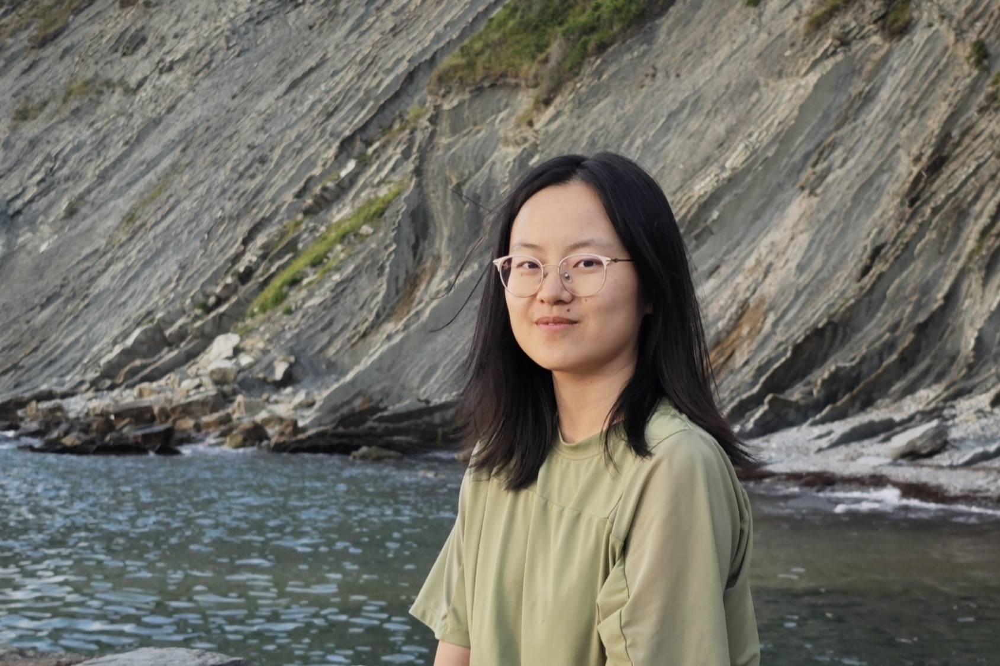
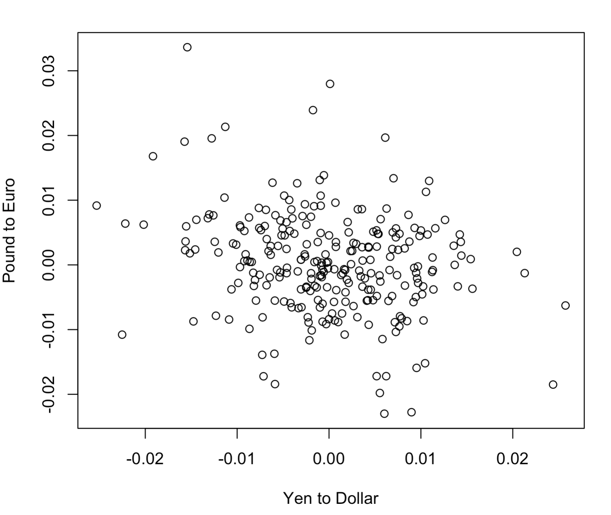
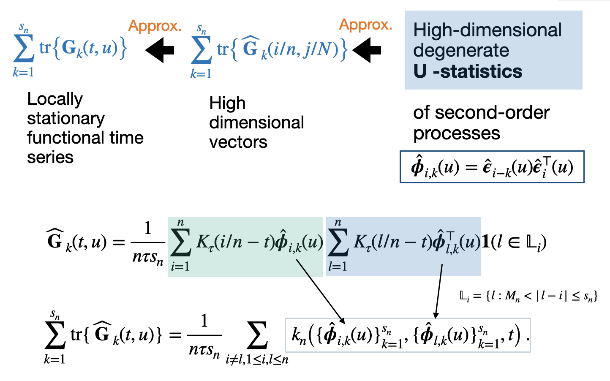
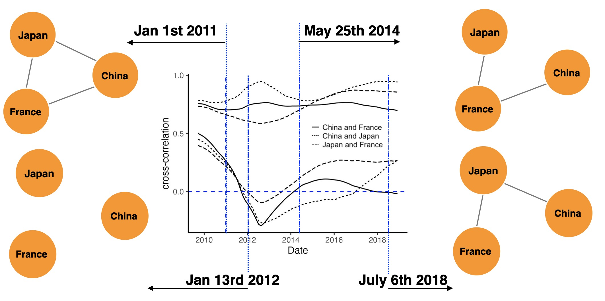
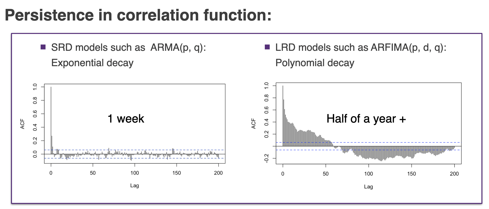
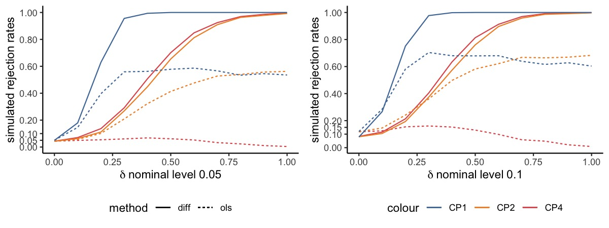
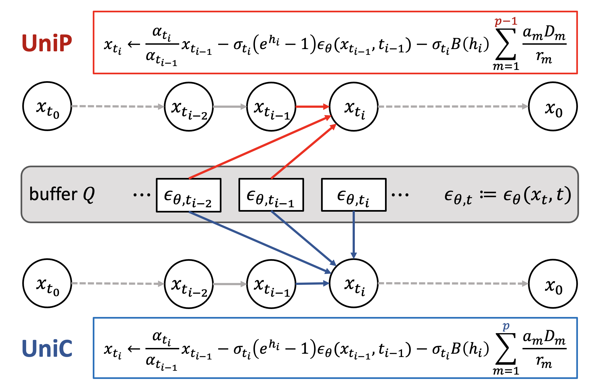

|
Lujia Bai
I am currently a postdoc researcher at Department of Mathematics, at Ruhr Unversity Bochum in the group of Holger Dette. I obtained my Ph.d. from Department of Statistics and Data Science at Tsinghua University, Beijing, China, advised by Weichi Wu . In 2020, I obtained my B.Sc. in the School of Statistics and Management, Shanghai University of Finance and Economics.
I am broadly interested in statistical learning for complex structure and non-stationary dynamics, see the figure below for an overview. My current research focuses on non-stationary time series, time-varying network, functional time series and long-range dependence.
I speak Chinese, English and German as well as Spanish.
Email
|

|
|
News
2025-10: Our new paper " Measuring deviations from spherical symmetry " is on arxiv.
2025-09: Our paper "Uniform variance reduced simultaneous inference of time-varying correlation networks " is accepted by IEEE Transactions on Information Theory.
2025-06: I obtained the Danish Data Science Academy Visit Grant.
2024-12: Our new paper is on arxiv http://arxiv.org/abs/2501.00118, which is about a portmanteau test for multivariate non-stationary functional time
series with an increasing number of lags based on a degenerate U-statistics! In addition, I will give a talk on GPSD on this work in the session of S12 (4) Computational, functional and high-dimensional statistics. See you in Dresden!
2024-11: I have been elected as one of the project leaders of TRR391 as a posdoctoral researcher.
|
|

|
Measuring deviations from spherical symmetry
Lujia Bai*, Holger Dette
Preprint (2025+)
[arXiv]
Most of the work on checking spherical symmetry assumptions on the distribution of the p-dimensional random vector Y has its focus on statistical tests for the null hypothesis of exact spherical symmetry. In this paper, we take a different point of view and propose a measure for the deviation from spherical symmetry, which is based on the minimum distance between the distribution of the vector (‖Y‖,Y/‖Y‖)⊤ and its best approximation by a distribution of a vector (‖Ys‖,Ys/‖Ys‖)⊤ corresponding to a random vector Ys with a spherical distribution. We develop estimators for the minimum distance with corresponding statistical guarantees (provided by asymptotic theory) and demonstrate the applicability of our approach by means of a simulation study and a real data example.
|
|

|
A portmanteau test for multivariate non-stationary functional time series with an increasing number of lags
Lujia Bai*, Holger Dette,
Weichi Wu
Preprint (2025+)
[arXiv]
In this paper, we introduce a specialized portmanteau-type test tailored for assessing white noise assumptions for multivariate locally stationary functional time series without dimension reduction.
|
|

|
Uniform variance reduced simultaneous inference of time-varying correlation networks
Lujia Bai*,
Weichi Wu
IEEE Transactions on Information Theory (2025+)
[arXiv] [IEEE TIT]
This paper proposes a unified framework for inferring large-scale time-varying correlation networks via data-driven time-varying thresholds that can control uncertainty simultaneously.
|
|

|
Detecting long-range dependence for time-varying linear models
Lujia Bai*,
Weichi Wu
Bernoulli(2024)
[arXiv]
[Code]
We consider the problem of testing for long-range dependence in time-varying coefficient regression models, where the covariates and errors are locally stationary, allowing complex temporal dynamics and heteroscedasticity. We develop KPSS, R/S, V/S, and K/S-type statistics based on the nonparametric residuals.
|
|

|
Difference-based covariance matrix estimate in time series nonparametric regression with applications to specification tests
Lujia Bai*,
Weichi Wu
Biometrika(2024)
[arXiv]
[Code]
We propose a novel difference-based and debiased long-run covariance matrix estimator for functional linear models with time-varying regression coefficients, allowing time series non-stationarity, long-range dependence, state-heteroscedasticity and their mixtures. We apply the new estimator to existing tests, overcoming the notorious non-monotonic power phenomena and improving the performance via the residual free formula.
|
|

|
UniPC: A Unified Predictor-Corrector Framework for Fast Sampling of Diffusion Models
Lujia Bai*,
Wenliang Zhao*,
Yongming Rao,
Jie Zhou ,
Jiwen Lu
NeurIPS 2023
[arXiv]
[Code]
[Project Page]
UniPC is a training-free framework designed for the fast sampling of diffusion models, which consists of a corrector (UniC) and a predictor (UniP) that share a unified analytical form and support arbitrary orders.
|
|
Honors and Awards
2025 Danish Data Science Academy Visit Grant
2024 Young Researcher Scholarship for Bernoulli-IMS World Congress
2024 ICSA Junior Researcher Award
2024 IMS Hannan Graduate Student Travel Award
Best Poster Award of 2024 Peking-Tsinghua Joint Statistics Colloqium Forum
2023 The First Prize of Comprehensive Scholarship of Tsinghua University
2022 Comprehensive Scholarship of Tsinghua University
2021 Comprehensive Scholarship of Tsinghua University
2019 Top Ten Female College Students in Shanghai, Shanghai University of Finance and Economics
2018 China Merchants Bank Scholarship, Shanghai University of Finance and Economics
2017 National Scholarship, Shanghai University of Finance and Economics
|
|
Conferences and Workshops
Contributed Session on Computational, functional and high-dimensional statistics. 17th German Probability and Statistics Days, March 2025.
Contributed Session on Long Memory detection. On Bernoulli-IMS World Congress, August 2024.
Substitute talk in the session of change point detection. On 2024 International Conference Frontiers of Data Science, Hangzhou, Zhejiang Province, July 2024.
Invited talk. On ICSA 2024 China Conference, Wuhan, Hubei Province, June 2024.
5-minute talk as a poster award winner. On 2024 Peking-Tsinghua Joint Statistics Colloqium, Beijing, May 2024.
Statistical Analysis of Networks, in Coventry, UK, September 2023.
Discrete Random Structures, in Lausanne, Swizerland, August 2023.
Data Science and Dependence 2023 Conference, in Heidelberg, Germany, July 2023.
16th German Probability and Statistics Days, in Essen, Germany, March 2023.
Invited talk. On CMStatistics 2022.
Best Paper Award. The 2021 International Workshop on Statistical Theory and Related Fields.
Invited talk. On 2021 Xiamen University Symposium on Modern Statistics.
Invited talk. On 2021 ICSA Applied Statistics Symposium in the session structural inference of time series data.
|
|
Teaching
2024 Winter, Mathematical Foundations on Data Science, Ruhr University Bochum (including replacement lectures, in English/German).
2020 Fall, Elementary Probability Theory, Tsinghua University.
2021 Spring and 2024 Spring, Financial Statistics, Tsinghua University.
2021 Fall, Advanced Mathematical Statistics I, Tsinghua University.
2022 Spring, Applied Time Series Analysis, Tsinghua University.
|
|
Academic Services
Journal Reviewer AOS, EJS, JRSSB, NeurIPS, STAT
|
|